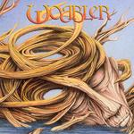

Home Artist links Label link

Wobbler - Hinterland
| Artist: | Wobbler |
| Title: | Hinterland |
| Label: | Laser s Edge LE1041 |
| Length(s): | 56 minutes |
| Year(s) of release: | 2005 |
| Month of review: | [04/2006] |
Line up
Lars Fredrik Froislie - keyboards, piano, mellotron, synths
Martin Nordrum Kneppen - drums, percussion
Kristian Karl Hultgren - bass, sax
Morten Andreas Eriksen - electric and acoustic guitars
Tony Johanessen - vocals
Tracks
| 1) | Serenade For 1652 | 0.41
|
| 2) | Hinterland | 27.46
|
| 3) | Rubato Industry | 12.44
|
| 4) | Clair Obscur | 15.37
|
Summary
When this album was released, it was subjected to same kind of hype that
many Swedish symphonic bands are, when they operate in the vein of Anglagard
and the like. However, Wobbler is from Norway, and they are helped production wise
by Jacob Holm-Lupo from label fellows White Willow.
The music
Serenade For 1652 is only a short introduction, which sets the tone (of
mellotrons) in a melancholy fashion. A major slice of the album goes to the
title track. After more melancholy, the music erupts with fast, ELPish runs
on the keyboards, and the rest of the band tries to follow. We are certainly
back in the seventies, but with a harder edge. Obvious comparisons can be made
to the likes of Anglagard and Sinkadus. The vocals are whispering, a bit in the vein
of Anekdoten, to whom the band maybe owes even a bit more, especially in the
atmospheres. But the singer is no Liljestrom, and does not have the plaintiveness
that Liljestrom uses so well. Still, his vocals are certainly satisfactory.
The vocals also ressemble the second vocalist of Flower Kings, Hasse Froberg, when he
powers up somewhat. In addition to the usual influences, Wobbler also harbours
doses of Gentle Giant, in a very derivative way. After one long such interlude,
both keyboards and vocals in GG style, we come to a restful part in which the
acoustic guitars dominate; this is almost classically styled.
Afterwards, the song really gets going, because now we get the typical emotional
outbursts that I am looking for in this music, supported by grand mellotrons.
The band alternates between the powerful and bombastic, and the playful.
Here, I am most reminded of Sinkadus. Then the guitars also sets in for some
fast playing. The song continues its journey, or we ours, through the song.
There continue to be rest points due to the acoustic guitar play, and in between
the keyboardist takes control. The emotional vocals towards the end, combined
with the organ play remind most of ELP, although the singing is more in the
Italian style.
We are halfway already, now we enter Rubato Industry. Although most people
name Anglagard and the like as main influences for this band, they also
remind me of the Flower Kings, especially in the vocals here, which really shine
among the instrumental bombast. Although this song does not bring us anything
really new, I like it more due to its higher compactness and also the power it
brings towards the end. The influences are more from the great Crim on this one,
while the band retains a certain playfulness.
Clair Obscur is a soft starter, with the mellotron at the head, alternated
with gentle piano. Only after alomost four minutes does the typical hectic
of KC set in. In the middle, the melodic material can be quite frolic. However,
for the larger part, there is quite a mysterious air to this song, especially
at the bookends.
Conclusion
Wobbler definitely operates in water similar to Swedish predecessors Anekdoten,
Anglagard and Sinkadus: following the footsteps of King Crimson. This results
in large doses of mellotron and organ. The sound is modern enough, no sticking
in the seventies, except where to get the band style. There is also some
Gentle Giant in here, and vocally I am reminded both of Flower King's Hasse Froberg
and Anekdoten's Liljestrom. Seems, not much on this album, is typical for Wobbler.
Maybe we can hear more such on their next album, to which I am already looking
forward. Strongest track for me was Rubato Industry.
© Jurriaan Hage